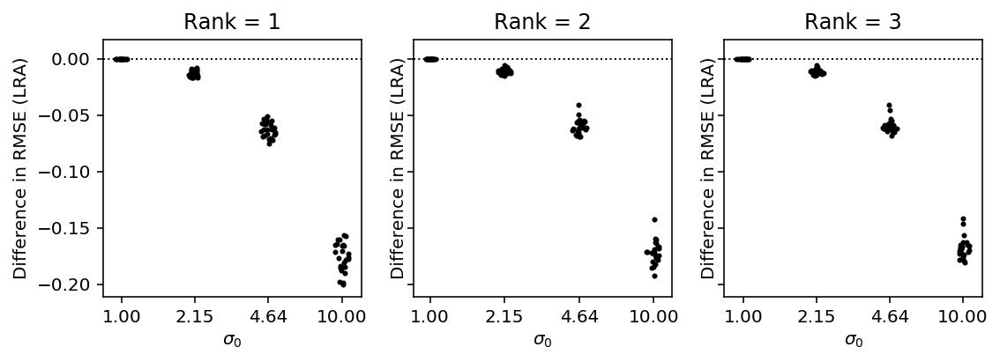
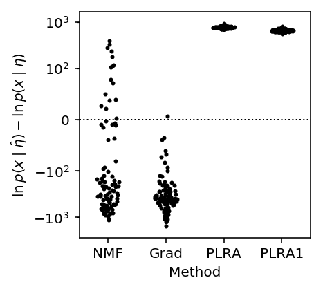
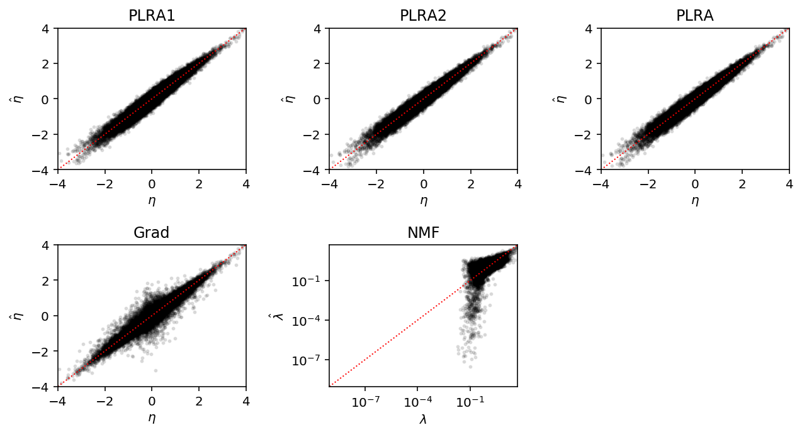
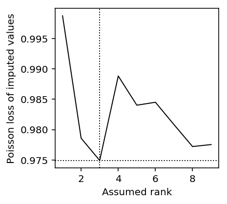

Weighted low rank approximation
Table of Contents
Introduction
We are interested in solving the weighted low-rank approximation problem:
\[ \min_{\mathbf{Z}} \sum_{i,j} w_{ij} \left(x_{ij} - z_{ij} \right)^2 \]
where \(n \times p\) target matrix \(\mathbf{X}\) and \(n \times p\) weight matrix \(\mathbf{W}\) are given, and \(\mathbf{Z}\) is constrained to some rank.
Our primary interest is to use WLRA to learn low rank structure in non-Gaussian data (especially Poisson data, as is generated by RNA-Seq). Using Taylor expansion of non-Gaussian likelihoods, we can rewrite the MLE of factor models as the solution to WLRA. The key idea is that the Taylor expansion is performed around a different value for each observation, naturally leading to an iterative approach.
The methods are implemented in the Python package wlra.
Methods
EM algorithm
Srebro and Jaakkola 2003 propose an EM algorithm to solve WLRA. The algorithm is EM in the following sense: suppose the weights \(w_{ij} \in \{0, 1\}\), corresponding to presence/absence, and suppose \(\mathbf{X} = \mathbf{Z} + \mathbf{E}\), where \(\mathbf{Z}\) is low-rank and elements of \(\mathbf{E}\) are Gaussian.
Then, \(E[x_{ij} \mid w_{ij} = 0] = z_{ij}\), naturally giving an EM algorithm. The E-step fills in \(x_{ij}\) with \(z_{ij}\), and the M-step estimates \(\mathbf{Z}\) from the filled in \(\mathbf{X}\). The solution to the M-step is given by the optimal unweighted rank \(k\) approximation, i.e. truncated SVD, because all the non-zero weights are equal to 1.
Conceptually, the method for arbitrary weights is to suppose instead that we have rational \(w_{ij} \in \{0, 1/N, \ldots, 1\}\).
Then, we can reduce this problem to a problem in 0/1 weights by supposing we have \(X^{(k)} = Z + E^{(k)}\), \(k \in 1, \ldots, N\), and each entry is observed in only \(N w_{ij}\) of the \(X^{(k)}\).
Then, the M-step becomes:
\[ \mathbf{Z}^{(t + 1)} = \mathrm{LRA}_k(\mathbf{W} \circ \mathbf{X} + (\mathbf{1} - \mathbf{W}) \circ \mathbf{Z}^{(t)}) \]
where \(\mathrm{LRA}_k\) is the unweighted rank \(k\) approximation and \(\circ\) denotes Hadamard product.
Intuitively, the implied E-step corresponds to taking the expectation of \(z_{ij}^{(k)}\) over the targets \(k\). Clearly, the algorithm generalizes to any weight matrix where \(0 \leq w_{ij} \leq 1\) are stored in finite precision. We can support arbitrary weights by scaling by the maximum weight (this simply scales the objective).
Alternative derivation
Stephens proposes an alternative EM algorithm. Suppose \(\mathbf{X} = \mathbf{M} + \mathbf{Z} + \mathbf{E}\) where \(\mathbf{M}\) is low rank, and:
\[ z_{ij} \sim \mathcal{N}(0, \sigma_{ij}^2) \]
\[ e_{ij} \sim \mathcal{N}(0, \sigma^{2}) \]
Let \(\mathbf{R} = \mathbf{X} - \mathbf{M}\). Then:
\[ r_{ij} \mid z_{ij} \sim \mathcal{N}(z_{ij}, \sigma^{2}) \]
\[ \mathbb{E}[z_{ij} \mid x_{ij}, m_{ij}, s_{ij}] = \frac{\sigma_{ij}^2}{\sigma^2 + \sigma_{ij}^2} (x_{ij} - m_{ij}) = (1 - w_{ij}) (x_{ij} - m_{ij}) \]
and the solution to the E step is:
\[ \mathbf{Z}^{(t + 1)} = (1 - \mathbf{W}) \circ (\mathbf{X} - \mathbf{M}^{(t)}) \]
Given \(\mathbf{Z}^{(t)}\), the solution to the M step is PCA with homoscedastic errors, i.e. truncated SVD.
\[ \mathbf{M}^{(t + 1)} = \mathrm{LRA}_k(\mathbf{X} - \mathbf{Z}) \]
\[ = \mathrm{LRA}_k(\mathbf{W} \circ \mathbf{X} + (1 - \mathbf{W}) \circ \mathbf{M}^{(t)}) \]
In comparison to the algorithm of Srebro and Jaakkola, this algorithm has an extra parameter \(\sigma^2\). However, we need:
\[ \mathbb{V}[x] = s_{ij}^2 = \sigma^{2} + \sigma_{ij}^{2} \]
where \(s_{ij}^2\) is a known variance for each observation \(x_{ij}\). If we let \(\sigma^2 = \min(s_{ij}^2)\), then:
\[ w_{ij} = \frac{\min(s_{ij}^2)}{s_{ij}^2} = \frac{1 / s_{ij}^2}{\max(1 / s_{ij}^2)} \]
Maximizing non-Gaussian likelihoods
Suppose \(l(\theta) = \ln p(x \mid \theta)\). Then, taking second-order Taylor expansion about \(\theta_0\):
\[ l(\theta) \approx l(\theta_0) + (\theta - \theta_0)\,l'(\theta_0) + \frac{(\theta - \theta)^2}{2}\,l''(\theta_0) \]
\[ = \frac{l''(\theta_0)}{2} \left[ \theta - \left(\theta_0 - \frac{l'(\theta_0)}{l''(\theta_0)}\right)\right]^2 + \mathrm{const}\]
where the constant does not depend on \(\theta\). Now, maximizing the objective is equivalent to maximizing a Gaussian likelihood:
\[= \mathcal{N}\left(\theta; \theta_0 - \frac{l'(\theta_0)}{l''(\theta_0)}, -\frac{1}{l''(\theta_0)}\right) + \mathrm{const} \]
Equivalently, minimizing the negative of the objective function is WLRA. This result makes sense because for fixed \(\sigma^2\), maximizing the Gaussian likelihood is the same as minimizing the Frobenius norm.
The result suggests we can improve \(l\) by optimizing this objective instead, and suggests an iterative algorithm where we alternate updates between \(\theta_0\) and \(\theta\).
Because this new objective is written in terms of derivatives of the log likelihood, we can readily write down the required quantities for relevant distributions:
| Distribution | Parameter \(\theta\) | Target (mean) | Weight (precision) |
|---|---|---|---|
| Bernoulli | \(\mathrm{logit}(p)\) | \(\theta + \frac{x - S(\theta)}{S(\theta)(1 - S(\theta))}\) | \(\frac{1}{S(\theta)(1 - S(\theta))}\) |
| Poisson | \(\ln\lambda\) | \(\theta + x\exp(-\theta) - 1\) | \(\exp(-\theta)\) |
where \(S(\cdot)\) denotes the sigmoid function.
Imputing missing values
The EM algorithm for WLRA supports missing values by setting \(w_{ij} = 0\).
When maximizing non-Gaussian likelihoods using WLRA, we need to introduce external weights \(\tilde{w}_{ij} \in \{0, 1\}\) to denote presence/absence. We can do this by using weights \(\tilde{\mathbf{W}} \circ \mathbf{W}\) in each outer iteration.
Choosing the rank of the approximation
The most obvious way to pick an optimal rank is to use cross-validation: hold out some samples, and evaluate the likelihood of the held-out samples using the estimated low rank structure.
Because WLRA supports missing value imputation, we can instead hold out individual entries of the matrix (increasing the effective size of the training data) and evaluate the imputation RMSE (Lin 2018). Requiring the model to be able to reconstruct corrupted inputs is the key idea of denoising autoencoders (Vincent et al. 2008). Intuitively, for low rank approximation the true rank should have the best imputation RMSE: lower rank should underfit, and higher rank should overfit.
Results
Recovering low rank structure
We first consider the problem of recovering a planted low rank matrix after convolving with Gaussian noise, assuming we know the rank.
\[ l_{ik} \sim \mathcal{N}(0, 1) \] \[ f_{kj} \sim \mathcal{N}(0, 1) \] \[ \mu_{ij} = (\mathbf{L F})_{ij} \] \[ \sigma^2_{ij} \sim \mathrm{Uniform}(1, \sigma^2_0) \] \[ x_{ij} \sim \mathcal{N}(\mu_{ij}, \sigma^2_{ij}) \]
We assume the noise variances for each observation are known, and use the inverse variances as the weights.
def wnorm(x, w): return (w * np.square(x)).sum() def simulate_gaussian(n, p, rank, s0=10, seed=0): np.random.seed(seed) l = np.random.normal(size=(n, rank)) f = np.random.normal(size=(rank, p)) eta = l.dot(f) noise = np.random.uniform(1, s0, size=eta.shape) w = 1 / noise x = np.random.normal(loc=eta, scale=noise) return x, w, eta def rrmse(pred, true): return np.sqrt(np.linalg.norm(pred - true) / np.linalg.norm(true)) def score_wlra(x, w, eta, rank): try: res = wlra.wlra(x, w, rank=rank, max_iters=1000) return rrmse(res, eta) except RuntimeError: return np.nan def score_lra(x, eta, rank): res = wlra.lra(x, rank) return rrmse(res, eta) def evaluate_gaussian_known_rank(num_trials=10): result = [] for s0 in np.logspace(0, 1, 4): for rank in range(1, 4): for trial in range(num_trials): x, w, eta = simulate_gaussian(n=100, p=1000, rank=rank, s0=s0, seed=trial) result.append([rank, s0, trial, score_lra(x, eta, rank=rank), score_wlra(x, w, eta, rank=rank)]) result = pd.DataFrame(result) result.columns = ['rank', 's0', 'trial', 'LRA', 'WLRA'] return result
<<imports>> <<gaussian-reconstruction>> res = evaluate_gaussian_known_rank(num_trials=25) res.to_csv('/project2/mstephens/aksarkar/projects/singlecell-ideas/data/wlra/gaussian-known-rank.txt.gz', compression='gzip', sep='\t')
sbatch --partition=broadwl --job-name=gaussian-wlra -n1 -c8 #!/bin/bash source activate singlecell python /project2/mstephens/aksarkar/projects/singlecell-ideas/code/gaussian-known-rank.py
Submitted batch job 50413961
Read the results.
results_gaussian_known_rank = pd.read_table('/project2/mstephens/aksarkar/projects/singlecell-ideas/data/wlra/gaussian-known-rank.txt.gz', index_col=0)
Plot the performance.
T = results_gaussian_known_rank.dropna() plt.clf() fig, ax = plt.subplots(1, len(set(T['rank'])), sharey=True) fig.set_size_inches(8, 3) for i, (rank, data_by_rank) in enumerate(T.groupby(['rank'])): groups = data_by_rank.groupby(['s0']) for j, (_, data) in enumerate(groups): y = data['WLRA'] - data['LRA'] f = st.gaussian_kde(y) py = f(y) x = j + .1 / py.max() * np.random.uniform(-py, py) ax[i].scatter(x, y, c='k', s=4) ax[i].axhline(y=0, c='k', ls=':', lw=1) ax[i].set_title(f'Rank = {rank}') ax[i].set_xticks(range(len(groups))) ax[i].set_xticklabels(['{:.2f}'.format(x) for x in groups.groups.keys()]) ax[i].set_xlabel('$\sigma_0$') ax[i].set_ylabel('Difference in RMSE (LRA)') fig.tight_layout()

Explaining training data
We generate a Poisson data matrix with planted row rank structure.
\[ \eta_{ij} = (\mathbf{L F})_{ij} \] \[ x_{ij} \sim \mathrm{Poisson}(\exp(\eta_{ij})) \]
We then evaluate the Poisson likelihood of the generated data given the estimated parameters.
def training_score_oracle(x, eta): return st.poisson(mu=np.exp(eta)).logpmf(x).sum() def training_score_nmf(x, rank): return st.poisson(mu=nmf(x, rank)).logpmf(x).sum() def training_score_grad(x, rank): import wlra.grad m = (wlra.grad.PoissonFA(n_samples=200, n_features=300, n_components=rank) .fit(x, atol=1e-3, max_epochs=10000)) return st.poisson(mu=np.exp(m.L.dot(m.F))).logpmf(x).sum() def training_score_plra(x, rank): try: return st.poisson(mu=np.exp(wlra.plra(x, rank=rank, max_outer_iters=100, check_converged=True))).logpmf(x).sum() except RuntimeError: return np.nan def training_score_plra1(x, rank): return st.poisson(mu=np.exp(wlra.plra(x, rank=rank, max_outer_iters=1))).logpmf(x).sum() def evaluate_training(rank=3, eta_max=2, num_trials=10): result = [] for trial in range(num_trials): x, eta = simulate_pois(n=200, p=300, rank=rank, eta_max=eta_max, seed=trial) result.append([ trial, training_score_oracle(x, eta), training_score_nmf(x, rank), training_score_grad(x, rank), training_score_plra(x, rank), training_score_plra1(x, rank) ]) result = pd.DataFrame(result) result.columns = ['trial', 'Oracle', 'NMF', 'Grad', 'PLRA', 'PLRA1'] return result
<<imports>> <<poisson-imputation>> <<pois-training>> res = evaluate_training(num_trials=100) res.to_csv('/project2/mstephens/aksarkar/projects/singlecell-ideas/data/wlra/pois-train-llik.txt.gz', sep='\t', compression='gzip')
sbatch --partition=mstephens --mem=4G --job-name=pois-train-llik --time=60:00 -n1 -c8 #!/bin/bash source activate singlecell python /project2/mstephens/aksarkar/projects/singlecell-ideas/code/pois-train-llik.py
Submitted batch job 50865668
Read the results.
pois_train_llik = pd.read_table('/project2/mstephens/aksarkar/projects/singlecell-ideas/data/wlra/pois-train-llik.txt.gz', index_col=0)
Plot the performance.
methods = ['NMF', 'Grad', 'PLRA', 'PLRA1'] plt.clf() plt.gcf().set_size_inches(3, 3) plt.yscale('symlog', linthreshy=100) for j, method in enumerate(methods): y = (pois_train_llik[method] - pois_train_llik['Oracle']).dropna() f = st.gaussian_kde(y) py = f(y) x = j + .2 / py.max() * np.random.uniform(-py, py) plt.scatter(x, y, c='k', s=4) plt.axhline(y=0, c='k', ls=':', lw=1) plt.xticks(range(len(methods)), methods) plt.xlim(-.5, len(methods) - .5) plt.xlabel('Method') _ = plt.ylabel('$\ln\,p(x \mid \hat\eta) - \ln\,p(x \mid \eta)$')

Imputing missing values
We generate a Poisson data matrix with planted row rank structure.
\[ \eta_{ij} = (\mathbf{L F})_{ij} \] \[ x_{ij} \sim \mathrm{Poisson}(\exp(\eta_{ij})) \]
We then hold out entries using numpy masked arrays, and impute them using the Poisson low rank approximation. We compare the imputation accuracy against non-negative matrix factorization (Lee and Seung 2001, Févotte and Idier 2011).
def simulate_pois(n, p, rank, eta_max=None, holdout=None, seed=0): np.random.seed(seed) l = np.random.normal(size=(n, rank)) f = np.random.normal(size=(rank, p)) eta = l.dot(f) if eta_max is not None: # Scale the maximum value eta *= eta_max / eta.max() x = np.random.poisson(lam=np.exp(eta)) if holdout is not None: mask = np.random.uniform(size=(n, p)) < holdout x = np.ma.masked_array(x, mask=mask) return x, eta def rmse(pred, true): return np.sqrt(np.square(pred - true).mean()) def pois_loss(pred, true): return (pred - true * np.log(pred + 1e-8)).mean() losses = [rmse, pois_loss] def loss(pred, true): return [f(pred, true) for f in losses] def imputation_score_mean(x): """Mean-impute the data""" return loss(x.mean(), x.data[x.mask]) def imputation_score_nmf(x, rank): try: res = nmf(x, rank, atol=1e-3) return loss(res[x.mask], x.data[x.mask]) except RuntimeError: return [np.nan for f in losses] def imputation_score_plra1(x, rank): res = np.exp(wlra.pois_lra(x, rank=rank, max_outer_iters=1)) return loss(res[x.mask], x.data[x.mask]) def imputation_score_plra(x, rank): try: res = np.exp(wlra.pois_lra(x, rank=rank, max_outer_iters=100, check_converged=True)) return loss(res[x.mask], x.data[x.mask]) except RuntimeError: return [np.nan for f in losses] def evaluate_pois_imputation(rank=3, holdout=0.25, eta_max=None, num_trials=10): result = [] for trial in range(num_trials): x, eta = simulate_pois(n=200, p=300, rank=rank, eta_max=eta_max, holdout=holdout, seed=trial) result.append(list(itertools.chain.from_iterable( [[trial], imputation_score_mean(x), imputation_score_nmf(x, rank), imputation_score_pois_lra(x, rank, max_retries=1), ]))) result = pd.DataFrame(result) result.columns = ['trial', 'rmse_mean', 'pois_loss_mean', 'rmse_nmf', 'pois_loss_nmf', 'rmse_plra', 'pois_loss_plra'] return result
Importantly, we assume \(\eta\) is low rank, and not that \(\exp(\eta)\) is low rank. It is not the case that if \(\eta\) is low rank, then \(\exp(\eta)\) is also always low rank.
np.array([(~np.isclose(np.linalg.svd(np.exp(simulate_pois(n=200, p=300, rank=rank, eta_max=3, seed=i)[1]), compute_uv=False), 0)).sum() for rank in range(1, 5) for i in range(10)]).reshape(-1, 10)
array([[ 12, 12, 11, 12, 12, 11, 11, 12, 12, 12], [ 66, 56, 60, 59, 50, 62, 58, 55, 50, 64], [171, 164, 151, 172, 154, 170, 164, 168, 151, 172], [200, 200, 200, 200, 200, 200, 200, 200, 200, 200]])
<<imports>> <<poisson-imputation>> res = evaluate_pois_imputation(eta_max=2, num_trials=100) res.to_csv('/project2/mstephens/aksarkar/projects/singlecell-ideas/data/wlra/pois-imputation.txt.gz', compression='gzip', sep='\t')
sbatch --partition=broadwl --job-name=pois-imputation -n1 -c28 --exclusive #!/bin/bash source activate singlecell python /project2/mstephens/aksarkar/projects/singlecell-ideas/code/pois-imputation.py
Submitted batch job 50872498
Read the results.
results_pois_imputation = pd.read_table('/project2/mstephens/aksarkar/projects/singlecell-ideas/data/wlra/pois-imputation.txt.gz', index_col=0)
Plot the performance.
T = results_pois_imputation.dropna() plt.clf() fig, ax = plt.subplots(1, 2, sharey=True) fig.set_size_inches(5.5, 3) methods = ['nmf', 'plra'] for i, (loss_, name) in enumerate(zip(['rmse', 'pois_loss'], ['RMSE', 'Poisson loss'])): for j, method in enumerate(methods): y = T[f'{loss_}_{method}'] - T[f'{loss_}_mean'] f = st.gaussian_kde(y) py = f(y) x = j + .2 / py.max() * np.random.uniform(-py, py) ax[i].scatter(x, y, c='k', s=4) ax[i].axhline(y=0, c='k', ls=':', lw=1) ax[i].set_xticks(range(len(methods))) ax[i].set_xticklabels([x.upper() for x in methods]) ax[i].set_xlim(-.5, 1.5) ax[i].set_title(name) ax[i].set_xlabel('Method') ax[0].set_ylabel('Difference in loss from baseline') fig.tight_layout()

Convergence
Extract one of the cases where the algorithm fails to converge.
import pathlib failure_cases = list(pathlib.Path('/scratch/midway2/aksarkar/ideas/trace/').glob('*.pkl'))
n = 0 for case in failure_cases: with open(case, 'rb') as f: x = pickle.load(f) try: _ = wlra.pois_lra(x, rank=3, max_outer_iters=50) except RuntimeError: n += 1 n
23
Look at the objective function as a function of x and eta.
plt.clf() fig, ax = plt.subplots(1, 2, sharex=True) fig.set_size_inches(7, 3) lam = np.logspace(-2, 2, 100) eta = np.log(lam) s2 = np.exp(-eta) for x in range(10): m = eta + x * np.exp(-eta) - 1 ax[0].plot(eta, st.norm(loc=m, scale=np.sqrt(s2)).pdf(eta), lw=1, c=colorcet.cm['fire'](x / 10)) ax[0].set_xlabel('$\eta$') ax[0].set_ylabel('Approximate objective') for x in range(10): ax[1].plot(eta, st.poisson(mu=lam).pmf(x), lw=1, c=colorcet.cm['fire'](x / 10)) ax[1].set_xlabel('$\eta$') ax[1].set_ylabel('True objective') plt.tight_layout() sm = plt.cm.ScalarMappable(cmap=colorcet.cm['fire'], norm=plt.Normalize(vmin=0, vmax=10)) sm._A = [] cb = plt.colorbar(sm, ax=ax) cb.set_label('Observation x')
Look at the estimates against the true eta for a simple problem.
x, eta = simulate_pois(n=200, p=300, rank=3, eta_max=4) etahat_plra1 = wlra.plra(x, rank=3, max_outer_iters=1) etahat_plra2 = wlra.plra(x, rank=3, max_outer_iters=2) etahat_plra = wlra.plra(x, rank=3, max_outer_iters=100, check_converged=True) import wlra.grad m = wlra.grad.PoissonFA(n_samples=200, n_features=300, n_components=3, log_link=True).fit(x, atol=1e-2, max_epochs=10000) etahat_grad = m.L.dot(m.F) lamhat = nmf(x, 3)
lim = 4 plt.clf() fig, ax = plt.subplots(2, 3) plt.gcf().set_size_inches(9, 5) for a in ax.ravel(): a.set_xlim([-lim, lim]) a.set_ylim([-lim, lim]) a.set_xlabel('$\eta$') a.set_ylabel('$\hat\eta$') for a in ax.ravel()[:-2]: a.plot([-lim, lim], [-lim, lim], c='r', lw=1, ls=':') ax[0][0].scatter(eta, etahat_plra1, c='k', s=4, alpha=0.1) ax[0][0].set_title('PLRA1') ax[0][1].scatter(eta, etahat_plra2, c='k', s=4, alpha=0.1) ax[0][1].set_title('PLRA2') ax[0][2].scatter(eta, etahat_plra, c='k', s=4, alpha=0.1) ax[0][2].set_title('PLRA') ax[1][0].scatter(eta, etahat_grad, c='k', s=4, alpha=0.1) ax[1][0].set_title('Grad') min_ = lamhat.min() ax[1][1].scatter(np.exp(eta), lamhat, c='k', s=4, alpha=0.1) ax[1][1].plot([min_, np.exp(lim)], [min_, np.exp(lim)], c='r', lw=1, ls=':') ax[1][1].set_xscale('log') ax[1][1].set_yscale('log') ax[1][1].set_xlim(min_, np.exp(lim)) ax[1][1].set_ylim(min_, np.exp(lim)) ax[1][1].set_title('NMF') ax[1][1].set_xlabel('$\lambda$') ax[1][1].set_ylabel('$\hat\lambda$') ax[1][2].set_axis_off() fig.tight_layout()

Choosing the rank of the approximation
We generate a Poisson data matrix with planted row rank structure.
\[ \eta_{ij} = (\mathbf{L F})_{ij} \] \[ x_{ij} \sim \mathrm{Poisson}(\exp(\eta_{ij})) \]
We then hold out \(p\) fraction of entries, and take the rank which minimizes the imputation RMSE.
As a proof of principle, look at the imputation RMSE as a function of rank for one simulated data set.
x, eta = simulate_pois(n=200, p=300, rank=3, eta_max=2, seed=0) mask = np.random.uniform(size=x.shape) < 0.25 x = np.ma.masked_array(x, mask=mask) query = range(1, 10) lra_scores = np.array([imputation_score_pois_lra(x, rank) for rank in query]) plt.clf() plt.gcf().set_size_inches(3, 3) plt.plot(query, lra_scores[:,1], c='k', lw=1, label='PLRA') plt.axvline(x=1 + np.argmin(lra_scores[:,1]), c='k', lw=1, ls=':') plt.axhline(y=lra_scores.min(), c='k', lw=1, ls=':') plt.xlabel('Assumed rank') _ = plt.ylabel('Poisson loss of imputed values')

Explaining held out data
A number of methods have been proposed to estimate low rank structure from count data.
- Non-negative matrix factorization (Lee and Seung 2001, Févotte and Idier 2011)
- Hierarchical Bayesian Poisson Factorization (Gopalan et al. 2015)
- ZINB-WAVE (Risso et al. 2018)
- scVI (Lopez et al 2018)
These methods typically try to learn low rank structure to solve the collaborative filtering problem: given user \(i\) interacted with item \(j\), predict what other items they will interact with (Hu et al. 2001). Low rank structure in this context corresponds to learning patterns of user preferences (factors), and the specific preferences of individual users (loadings).
One special feature of the problem is that only implicit feedback is assumed: we only have observations \(x_{ij} = 1\) when an interaction is recorded, and \(x_{ij} = 0\) could either reflect negative feedback or missing data. However, even methods developed specifically for scRNA-Seq make this assumption even though 0 does not represent a missing value in that context. It also means that many methods cannot deal with missing data which is not coded as 0.
Here, we instead evaluate methods on their ability to generalize to new data. We use real data, assuming:
\[ x_{ij} \sim \mathrm{Poisson}(R_i \lambda_{ij}) \]
\[ \lambda_{ij} = (\mathbf{L F'})_{ij} \]
and hold out molecules by randomly thinning the observed counts:
\[ y_{ij} \sim \mathrm{Binomial}(x_{ij}, 0.5) \]
\[ \tilde{y}_{ij} = x_{ij} - y_{ij} \]
This approach leaves the relative abundance of the transcripts unchanged in expectation, implying that the low rank structure learned in \(\mathbf{Y}\) should explain the data in \(\tilde{\mathbf{Y}}\).
Our metric is then the likelihood of the held-out data. We simply need to re-scale to account for different size factors \(R_i\).
def pois_llik(lam, train, test): lam *= test.sum(axis=1, keepdims=True) / train.sum(axis=1, keepdims=True) return st.poisson(mu=lam).logpmf(test).sum() def generalization_score_mean(train, test): lam = np.ones(train.shape) * train.mean(axis=0, keepdims=True) return pois_llik(lam, train, test) def rank_select(train, imputation_score, max_rank, holdout=0.1): """Search for the rank which minimizes imputation loss""" obj = np.inf opt = 1 for rank in range(1, 100): # Randomly hold out 10% of entries to impute x = np.ma.masked_array(train, np.random.uniform(size=train.shape) < holdout) res = imputation_score(x, rank)[1] if res < obj: opt = rank obj = res else: break return opt def generalization_score_plra(train, test): opt_rank = rank_select(train, imputation_score_pois_lra, max_rank=10) lam = np.exp(wlra.pois_lra(train, opt_rank)) return pois_llik(lam, train, test) def generalization_score_nmf(train, test): opt_rank = rank_select(train, imputation_score_nmf, max_rank=100) lam = nmf(train, opt_rank) return pois_llik(lam, train, test) def generalization_score_hpf(train, test, rank): import scHPF.preprocessing import scHPF.train import tempfile with tempfile.TemporaryDirectory(prefix='/scratch/midway2/aksarkar/ideas/') as d: # scHPF assumes genes x cells scHPF.preprocessing.split_dataset_hpf(train.T, outdir=d) opt = scHPF.train.run_trials( indir=d, outdir=d, prefix='', nfactors=rank, a=0.3, ap=1, bp=1, c=0.3, cp=1, dp=1, # This is broken when we call the API directly logging_options={'log_phi': False}) L = np.load(f'{opt}/beta_invrate.npy') * np.load(f'{opt}/beta_shape.npy') F = np.load(f'{opt}/theta_invrate.npy') * np.load(f'{opt}/theta_shape.npy') return pois_llik(L.dot(F.T), train, test) def generalization_score_scvi(train, test): from scvi.dataset import GeneExpressionDataset from scvi.inference import UnsupervisedTrainer from scvi.models import VAE data = GeneExpressionDataset(*GeneExpressionDataset.get_attributes_from_matrix(train)) vae = VAE(n_input=train.shape[1]) m = UnsupervisedTrainer(vae, data, verbose=False) m.train() # Training permuted the data for minibatching. Unpermute before "imputing" # (estimating lambda) lam = np.vstack([m.train_set.sequential().imputation(), m.test_set.sequential().imputation()]) return pois_llik(lam, train, test) def generalization_score_dca(train, test): import anndata import scanpy.api data = anndata.AnnData(X=train) # "Denoising" is estimating lambda scanpy.api.pp.dca(data, mode='denoise') lam = data.X return pois_llik(lam, train, test) def train_test_split(x, p=0.5): train = np.random.binomial(n=x, p=p, size=x.shape) test = x - train return train, test def read_ipsc(): keep_samples = pd.read_table('/project2/mstephens/aksarkar/projects/singlecell-qtl/data/quality-single-cells.txt', index_col=0, header=None) keep_genes = pd.read_table('/project2/mstephens/aksarkar/projects/singlecell-qtl/data/genes-pass-filter.txt', index_col=0, header=None) x = (pd.read_table('/project2/mstephens/aksarkar/projects/singlecell-qtl/data/scqtl-counts.txt.gz', index_col=0) .loc[keep_genes.values.ravel(),keep_samples.values.ravel()] .values.T) return x def evaluate_generalization(data, num_trials): result = [] x = data() for trial in range(num_trials): train, test = train_test_split(x) result.append([trial, generalization_score_mean(train, test), generalization_score_nmf(train, test), generalization_score_hpf(train, test, rank=50), # generalization_score_plra(train, test), generalization_score_scvi(train, test) ]) result = pd.DataFrame(result) result.columns = ['trial', 'Mean', 'NMF', 'HBPF', 'scVI'] return result
<<imports>> <<poisson-imputation>> <<generalization>> res = evaluate_generalization(read_ipsc, 1) res.to_csv('/project2/mstephens/aksarkar/projects/singlecell-ideas/data/wlra/pois-generalization.txt.gz', sep='\t', compression='gzip')
# sbatch --partition=gpu2 --gres=gpu:1 --job-name=pois-generalization --mem=16G --time=60:00 -c4 sbatch --partition=broadwl --job-name=pois-generalization --mem=16G --time=60:00 -n1 -c28 --exclusive #!/bin/bash source activate singlecell python /project2/mstephens/aksarkar/projects/singlecell-ideas/code/pois-generalization.py
Submitted batch job 50610089
sacct -j 50550386 -o Elapsed
Elapsed ---------- 00:04:49 00:04:49 00:04:49